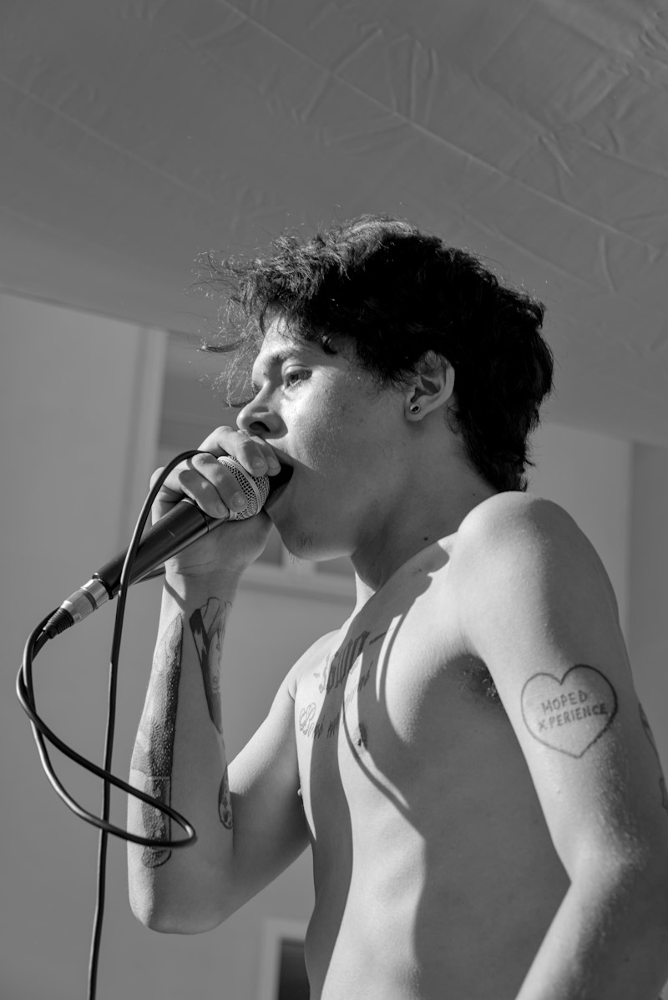
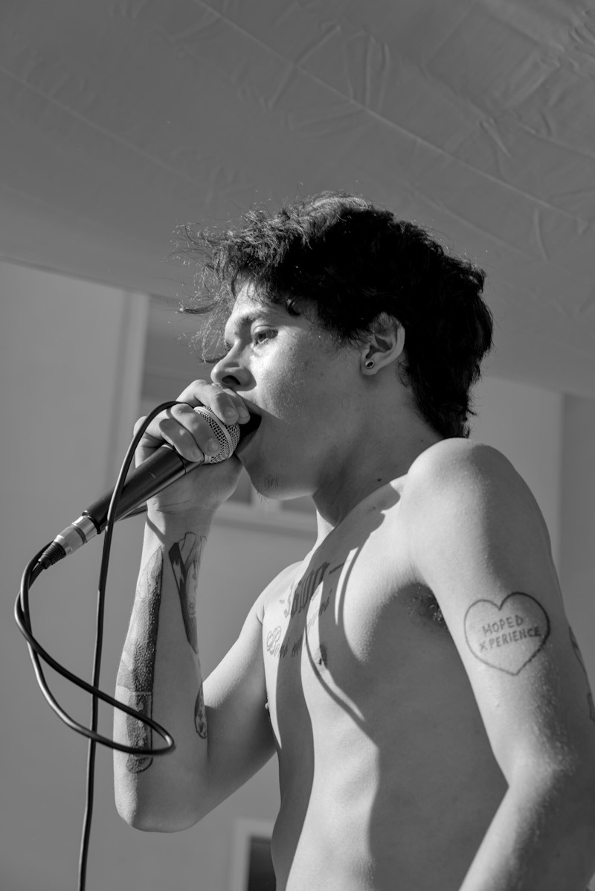
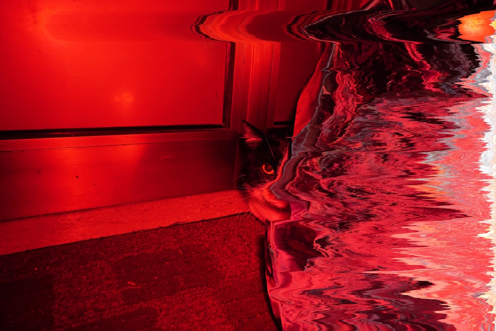
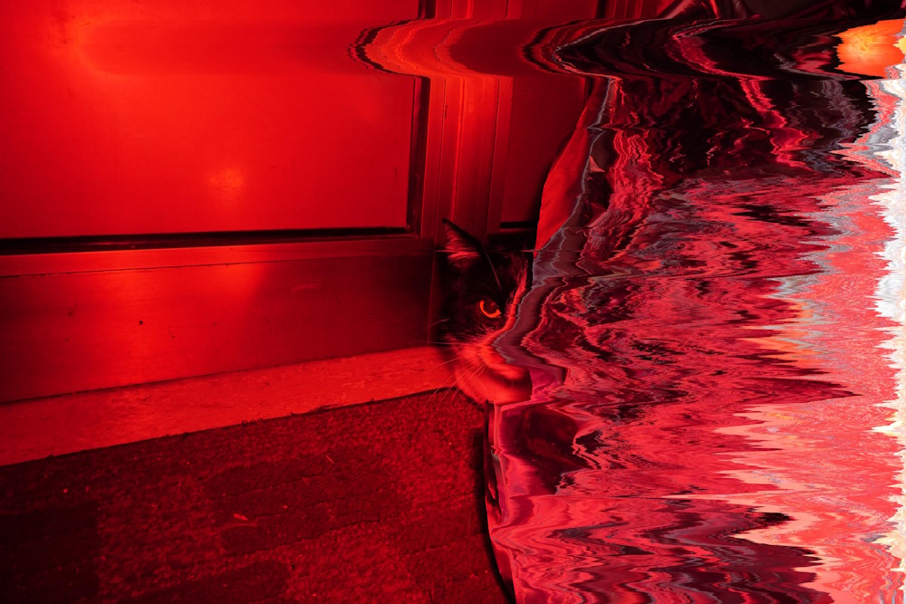

About this series
Like many other photographers, I have a deep love for analogue photography. Shooting a roll of film is an entirely different experience from the digital approach. To me, the fascinating thing about film is the process and journey that happen before you're able to see what you've captured. In the digital world, this excitement and novelty are taken away by screens and live previews.
What if there were a way to capture that same excitement and surprise while maintaining the mathematical precision that only a CMOS sensor can provide? Through my experience as a software developer, I've created my own small programs that edit my pictures by applying filters or other algorithms, introducing an element of randomness decided by the computer. Just like when a piece of film is bathed in acids and slight changes in the temperature of these liquids can affect the final result, I wanted to replicate the same thing: giving up some control over the final look of my photos and handing it over to a machine.


 



About me
I don’t really consider myself a photographer — at least not in the traditional sense. What drew me to photography wasn’t detail or technical mastery, but the simple, powerful idea of preserving a moment. For me, taking a picture is about documenting and saving a fragment of reality, holding onto something that would otherwise disappear.
I’m most comfortable behind the lens when I’m invisible. With a camera in front of my face, I stop being a person and become something else — a quiet observer. Like Garry Winogrand, I try to disappear into the scene, blending in rather than standing out. I’m drawn to nature, to emptiness, and to stillness. I rarely photograph people unless it’s part of an event. Solitude tends to shape the images I create.
I shoot both film and digital, and I let them contaminate each other. My background as a software developer gives me a unique angle: I write my own programs to edit images, introducing randomness to strip away some of the absolute control digital photography tends to offer. In that way, I try to bring the unpredictability and rawness of film into the digital world. Film has a simplicity I love — and a resistance to time that digital files can’t quite match.
Despite working in tech, I’m not particularly structured in my creative process. Most of my projects are long-term and intuitive — often tied to a place or idea I can’t stop thinking about. I always carry a camera with me. It’s become a kind of habit, a companion — one that sparks conversation and opens unexpected doors.
One project especially close to me is about my parents' home. I’ve been slowly documenting their house and their lives, trying to preserve something that won’t last forever. I know not everything I capture will survive, but I hope what remains will be enough to keep the memory alive.
I don’t take photos to make others feel a specific thing. I take them for myself — and hope others might see some of the same beauty I see. I believe photography is a stupidly easy art — in the best way. Anyone can pick up a camera and make something meaningful. Whether it's blurry or perfect, overexposed or polished, all photography has value. What matters is the act of seeing — and choosing to keep something that might otherwise fade.